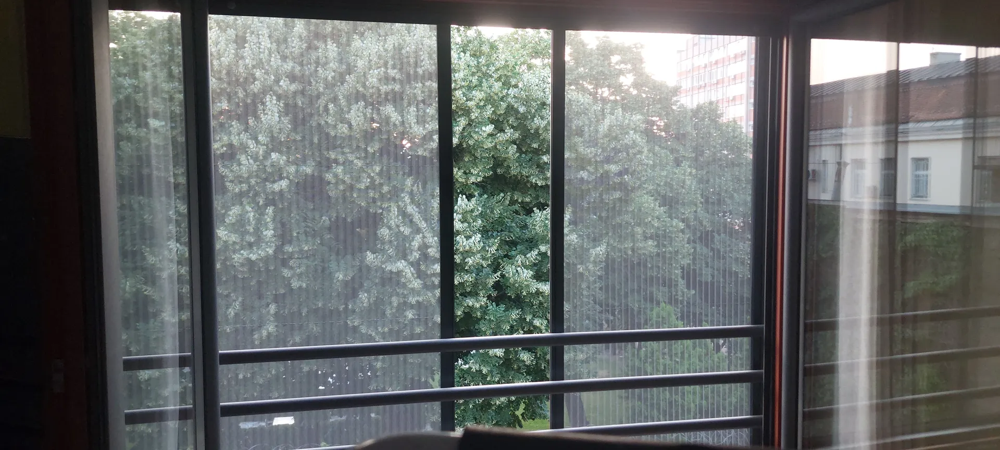
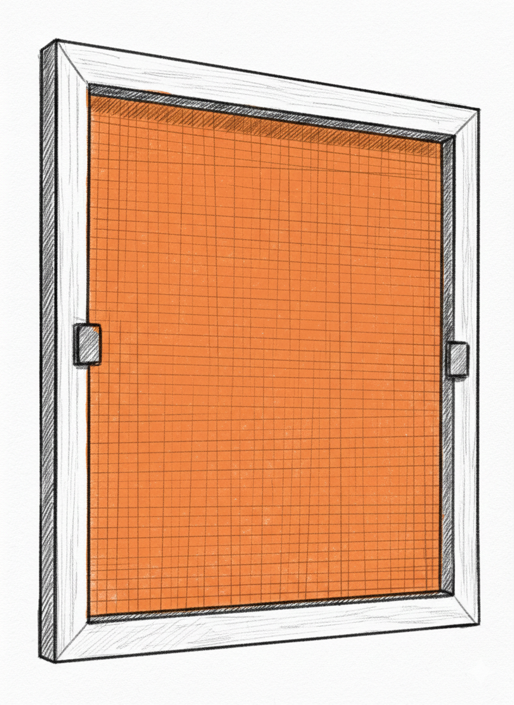
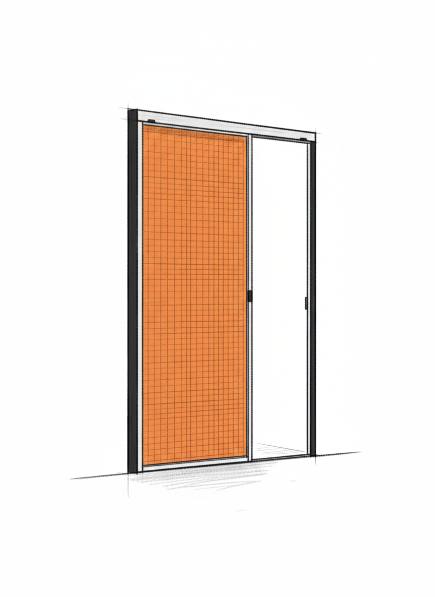
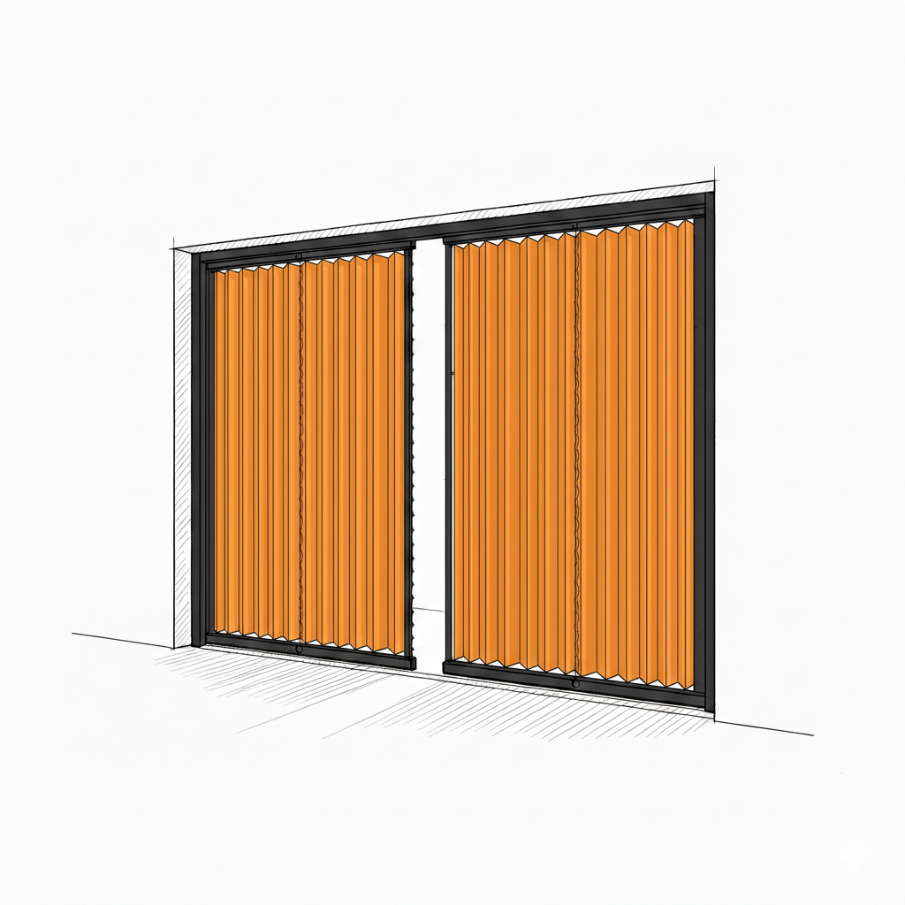
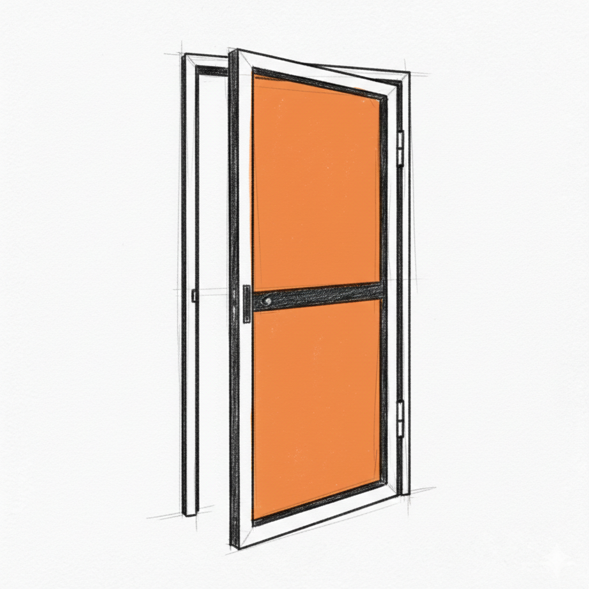
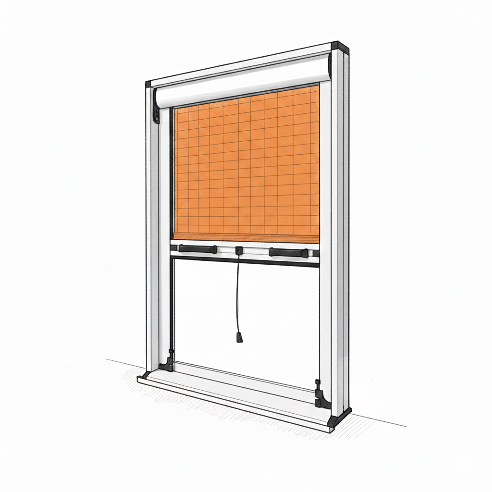
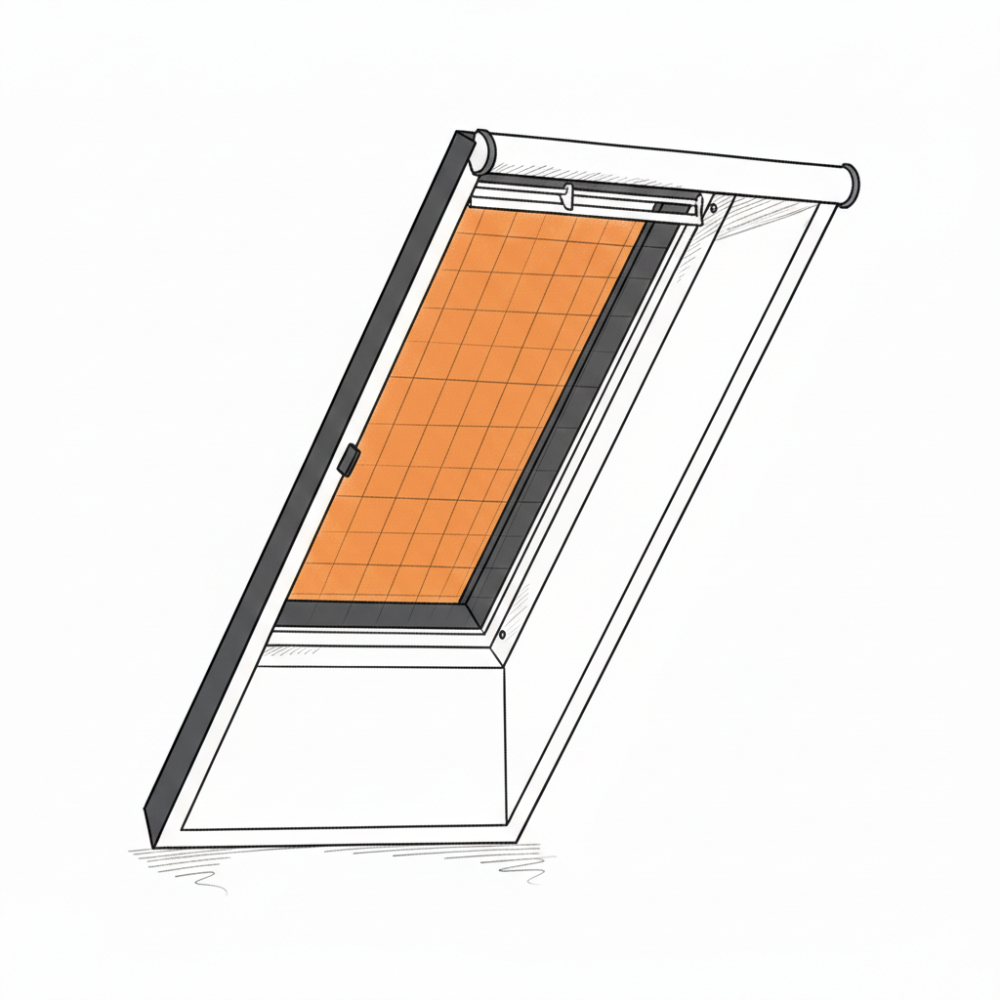
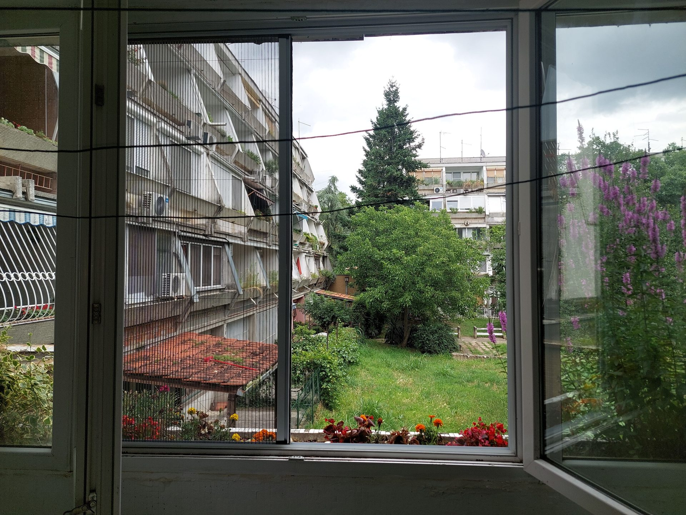

Profesionalna ugradnja svih tipova komarnika po meri - Fiksni, Plise, Američki
Kada su u pitanju komarnici, svaki dom u Beogradu zaslužuje kvalitetnu zaštitu od komaraca i drugih insekata. KOMOTRAKS se već 5 godina bavi profesionalnom ugradnjom komarnika, harmonika vrata i zavesa širom Beograda, sa posebnim fokusom na Zvezdaru, Palilulu, Karaburmu i Voždovac. Naše iskustvo i posvećenost kvalitetu čine nas pouzdanim partnerom za sve koji žele miran sen bez buke i ujeda komaraca.

Ugradnja komarnika nije samo praktično rešenje - to je investicija u kvalitet vašeg života. Bilo da tražite fiksni komarnik za standardne prozore, plise komarnik za veće otvore ili moderan američki komarnik koji se klizi gore-dole, mi imamo rešenje koje odgovara vašim potrebama i budžetu.

Komarnici bez mehanizma
Idealni za male otvore koji se ređe koriste. Montiraju se trajno na prozor i pružaju pouzdanu zaštitu bez dodatnih mehanizama.
Fiksni komarnici su najtraženije i najekonomičnije rešenje za zaštitu prozora od insekata. Ovaj tip komarnika se montira na ram prozora ili vrata i ostaje trajno postavljen. Idealni su za prozore koje retko otvarate ili za sezonsku upotrebu. Naši fiksni komarnici se prave po meri vašeg prozora, garantujući savršenu zaštitu bez pukotina kroz koje bi insekti mogli da prođu. Aluminijumski ram i kvalitetna mreža obezbeđuju dugotrajnost i otpornost na vremenske uslove.
Fiksni komarnici cena kod nas je od 20€ do 25€, što ih čini pristupačnim rešenjem za svaki budžet. Pokrivamo ceo Beograd - od Zvezdare do Voždovca, ugradnja se vrši brzo i profesionalno. Montaža fiksnog komarnika traje samo 15-20 minuta po prozoru, a rezultat je godinama zaštite bez brige.

Fleksibilna zaštita za vrata i veće otvore
Elegantno rešenje koje se skuplja poput harmonike, idealno za terase i balkonska vrata. Štedi prostor i omogućava potpunu kontrolu.
Plise komarnici predstavljaju modernije rešenje koje spaja funkcionalnost sa estetikom. Ovaj tip komarnika se harmonika sklapa i rasklaplja po potrebi, štedijuč prostor i omogućavajući vam da koristite prozor ili vrata bez uklanjanja komarnika. Posebno su popularni za balkonska vrata i veće otvore gde klasični fiksni komarnici nisu praktični. Za veće otvore između prostorija, možete razmotriti i harmonika vrata koja pružaju elegantan prelaz.
Sistem plise komarnika omogućava lako sklanjanje kada vam komarnik nije potreban, a može se brzo aktivirati kada želite zaštitu. Idealan je izbor za one koji cene fleksibilnost i moderan dizajn. Cena plise komarnika kod nas je od 38€ do 45€ i varira u zavisnosti od dimenzija, ali je investicija koja se brzo isplati kroz udobnost i funkcionalnost. Nudimo ih za sve tipove prozora i vrata u Beogradu.

Inovativno rešenje sa magnetnim zatvaranjem
Najnovija inovacija koja omogućava zatvaranje sa obe strane pomoću magneta. Idealno za veće otvore, balkonska vrata i terase gde možete otvoriti komarnik sa leve ili desne strane.
Dvodelni plise komarnici su najnovija inovacija u oblasti zaštite od insekata. Za razliku od standardnih plise komarnika koji se otvaraju samo sa jedne strane, dvodelni sistem omogućava zatvaranje sa obe strane pomoću magneta. Ovo praktično rešenje je idealno za veće otvore, balkonska vrata i terase jer omogućava da otvorite komarnik sa leve ili desne strane, zavisno od vaših potreba.
Magnetni sistem zatvaranja obezbeđuje sigurno i hermetičko prijanjanje bez pukotina kroz koje bi insekti mogli da prođu. Komarnik se lako sklapa i rasklaplja, a magneti automatski fiksiraju mreže kada ih zatvorite. Cena dvodelnih plise komarnika je 45€ i predstavlja odličan odnos cene i kvaliteta za ovaj tip sistema. Posebno su popularni kod porodica sa decom i ljubimcima jer omogućavaju lak prolaz sa obe strane.

Komarnici sa šarkama (američka vrata)
Klasično rešenje za ulazna i balkonska vrata sa automatskim zatvaranjem. Otvaraju se ka spolja i imaju magnetno zatvaranje za sigurnost.
Američki komarnici, poznati i kao rolokomari, predstavljaju vrhunac udobnosti i funkcionalnosti. Ovaj tip se klizi vertikalno gore-dole po šinama, omogućavajući vam potpunu kontrolu nad otvorom. Kada vam komarnik nije potreban, jednostavno ga podignete i on ostaje diskretno smešten u gornjem delu rama.
Američki komarnici su posebno praktični za vrata i veće prozore gde često prolazite. Mehanizam klizanja je precizan i trajan, a mreža kvalitetna i izdržljiva. Ovaj premium tip komarnika spaja estetiku sa performansama, čineći ga idealnim izborom za one koji žele najbolje. Nudimo ugradnju američkih komarnika u svim delovima Beograda.

Vertikalno klizanje - ekonomično rešenje
Ekonomično rešenje koje se klizi vertikalno gore-dole. Jednostavna upotreba i montaža, idealno za standardne prozore i balkone.
Rolo komarnici su ekonomično rešenje koje kombinuje praktičnost sa pristupačnom cenom. Sistem vertikalnog klizanja omogućava lako podizanje i spuštanje mreže po potrebi. Mehanizam je jednostavan za rukovanje i ne zahteva posebno održavanje.
Idealni su za standardne prozore i balkonska vrata gde želite fleksibilnost ali vam nije potreban premium sistem. Cena rolo komarnika je 40€ za standardne dimenzije, što ih čini jednim od najpristupačnijih rešenja na tržištu. Montaža je brza i jednostavna, a rezultat je funkcionalna zaštita od insekata.

Specijalizovano rešenje za krovne prozore
Specijalno dizajnirani za Velux i druge krovne prozore. Prilagođeni nagibu krova i otporni na vremenske uslove.
Krovni komarnici zahtevaju poseban pristup zbog specifičnog položaja i nagiba krovnih prozora. Kompatibilni su sa najpopularnijim brendovima kao što su Velux, Roto, Fakro i drugi. Sistem se montira direktno na ram krovnog prozora i prilagođava se uglu nagiba.
Krovni prozori su posebno izloženi toploti tokom leta, što često znači i veću koncentraciju insekata. Naši krovni komarnici su dizajnirani da izdrže direktnu sunčevu svetlost i promene temperature. Cena krovnih komarnika je od 40€ do 45€ zavisno od dimenzija prozora. Nudimo profesionalnu montažu sa pristupom sa krovnih stepenica ili fasadnih skela.
Primere Ugrađenih Komarnika možete videti u Galeriji
Dosadni insekti ne moraju biti deo vaše svakodnevice, a komarnici ne moraju da kvare izgled vašeg doma. Verujemo da je estetika jednako važna kao i funkcionalnost, zato smo tu da vam pomognemo da zaštitite svoj prostor, a da pritom vaši prozori izgledaju bolje nego ikad.
Znamo da vam je bitno da se svaki detalj uklopi. Naši aluminijumski profili su trajno obojeni tehnikom elektrostatičkog plastificiranja – što znači da nema ljuštenja, a boja ostaje postojana i nakon godina izlaganja suncu. Birajte između tri najtraženije nijanse:
Sa 5 godina iskustva u radu širom Beograda, naučili smo da ne postoji standardna veličina prozora. Svaki prozor je priča za sebe, zato svakom projektu pristupamo hirurški precizno. Koristimo isključivo aluminijum koji ne rđa i fiberglas mreže koje su otporne na kidanje i deformaciju.

Naš proces je osmišljen tako da niko ne gubi vreme:
Pustite svež vazduh unutra, a insekte ostavite napolju. Mi smo tu da vam pružimo rešenje koje će trajati godinama, jer vaše zadovoljstvo je naša najbolja preporuka.
Znamo da život u Beogradu nosi različite izazove – od rečne vlage do gradske vreve. Zato naš servis ugradnje ne pokriva samo adrese, već rešava konkretne probleme vašeg komšiluka.
Zvezdara i Palilula su nam prva linija odbrane. Blizina Zvezdarske šume i Dunava znači samo jedno – komarci su ovde "domaćini". Komarnici na Zvezdari (od Crvenog Krsta i Bulbuldera do Mirijeva i Mokrog Luga) su naša najtraženija usluga. Na Karaburmi i Bogosloviji, gde je blizina reke ključni faktor, kvalitetna zaštita nije luksuz, već neophodnost za normalan san tokom letnjih noći.
Novi Beograd i Zemun zatrazuju rešenja za moderne prostore, koje takodje nudimo! Ovaj deo grada krase moderni objekti sa velikim staklenim površinama i terasama. Standardni komarnici ovde često nisu dovoljni. Zato za Novobeograđane i Zemunce najčešće biramo plise komarnike ili američke sisteme za velika vrata – oni pružaju maksimalnu zaštitu bez kvarenja pogleda i modernog dizajna vašeg stana.
Voždovac, Rakovica i Čukarica gde je uvek brza i sigurna montaža. Bilo da ste na Banjici, u Jajincima ili na padinama Čukarice, naše ekipe su vam blizu. Voždovac je jedna od naših glavnih zona, gde se klijenti najčešće odlučuju za dugotrajna rešenja koja odolevaju vetru i suncu.
Bez obzira u kom se delu Beograda nalazite, naš proces je uvek isti: Pozovete nas, mi procenimo situaciju na terenu i zajedno pronalazimo model koji se uklapa u vaš budžet i potrebe. Dostupni smo u svakom kutku grada. Ako vidite naš kombi u vašem naselju, mahnite nam, verovatno upravo montiramo miran san nekom od vaših komšija!
Pozovite nas za besplatno merenje i stručnu procenu. Radimo brzo, kvalitetno i po vašoj meri.